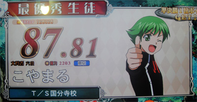
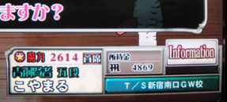
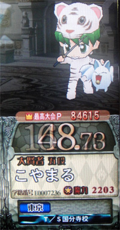

こやまる＠QMA6の成績です。

■成績(2010/3/20時点)
階級 ： 白銀賢者三段
獲得魔法石数 ： 36567個 (4525位)
魔力ポイント ： 2799ポイント↑
優勝回数 ： 10回 (4341位)
100点満点達成回数 ： 0回 (圏外)
連続正解数 ： 22問 (26359位)
総合正解率 ： 60.43%↓
平均順位 ： 7.50位
プラチナメダル ： 1枚
ゴールドメダル ： 9枚
シルバーメダル ： 21枚
ブロンズメダル ： 16枚

↑2009年10月、新宿南口のT/Sで首席になりました。

■正解率(2010/3/20時点)
| ノン | アニメ | スポ | 芸能 | ライフ | 社会 | 文系 | 理系 | |
|---|---|---|---|---|---|---|---|---|
| 平均 | 57.67% ↓ |
60.63% ↑ |
48.41% ↑ |
53.68% ↑ |
70.43% ↑ |
65.05% ↓ |
64.52% ↓ |
61.43% ↓ |
| ｾﾚｸﾄ | 61.95% | 64.89% | 59.48% | 62.71% | 70.55% | 67.53% | 67.52% | 67.41% |
| ﾊﾟﾈﾙ | 61.37% | 60.74% | 51.57% | 53.26% | 69.26% | 63.77% | 73.94% | 55.97% |
| ﾀｲﾋﾟﾝｸﾞ | 63.64% | 66.18% | 59.47% | 47.79% | 70.55% | 66.67% | 60.89% | 68.53% |
| ﾏﾙﾁ | 45.93% | 46.41% | 36.63% | 54.24% | 69.38% | 46.89% | 60.00% | 57.79% |
| ﾗﾝﾀﾞﾑ | 53.94% | 60.47% | 49.12% | 48.05% | 73.68% | 75.32% | 60.00% | 56.25% |
| ﾗﾝﾀﾞﾑ1 | 58.33% | 28.57% | 66.67% | 33.33% | 66.67% | 60.00% | 44.44% | |
| ﾗﾝﾀﾞﾑ２ | 83.33% | 26.09% | 57.14% | 77.78% | 44.44% | 33.33% | 41.67% | |
| ﾗﾝﾀﾞﾑ３ | 73.33% | 50.00% | 53.33% | 77.78% | 85.09% | 60.00% | 50.00% |
■検定試験(2010/3/20時点)
| アニメソング検定ＥＸ | Ｓ | 3126点(2913/89757位) |
| アイドル検定ＥＸ | Ｓ | 2513点(3298/39123位) |
| 三国志検定ＥＸ | Ａ | 1584点(23397/51579位) |
| 東京検定 | Ｓ | 2957点(1950/30847位) |
| プロレス検定 | Ｂ | 1250点(11149/19066位) |
| ロールプレイングゲーム検定 | Ｓ | 2730点(5509/53671位) |
| プロ野球検定 | Ａ | 1654点(11261/29716位) |
| 声優検定 | Ｓ | 3160点(5496/55107位) |
| ミリタリー検定 | Ａ | 1671点(8087/20561位) |
※点数(自分の順位/全体数)
■実力テスト(2010/3/20時点)
| ノンジャンル | 2000年代 | Ｓ | 2460点(376/48432位) |
| 1990年代 | Ｓ | 2632点(475/30880位) | |
| 1980年代 | Ｓ | 2457点(359/17915位) | |
| 昭和 | Ｓ | 2273点(365/13580位) | |
| 江戸時代 | Ｓ | 3222点(83/9620位) | |
| アニメ＆ゲーム | アニメ・特撮 | Ａ | 1143点(15217/75823位) |
| 漫画・ノベル | Ａ | 1625点(6603/70332位) | |
| ゲーム・おもちゃ | Ｓ | 2015点(2539/65984位) | |
| ロボットアニメ | Ｂ | 653点(35329/42260位) | |
| 少年漫画 | Ｓ | 2476点(899/35495位) | |
| スポーツ | 野球 | Ａ | 1180点(12326/41578位) |
| サッカー | Ａ | 1003点(14455/30644位) | |
| スポーツその他 | Ａ | 1666点(1893/24338位) | |
| 競馬 | Ｓ | 2274点(4289/19617位) | |
| 五輪 | Ｓ | 2012点(602/8110位) | |
| 芸能 | テレビ・映画 | Ａ | 1222点(5612/38082位) |
| 音楽 | Ａ | 1036点(10734/39793位) | |
| 芸能その他 | Ａ | 1024点(10663/30490位) | |
| お笑い | Ａ | 1035点(14741/32205位) | |
| ロック | Ｓ | 1998点(942/12609位) | |
| ライフスタイル | グルメ・生活 | Ｓ | 1800点(2653/44470位) |
| ホビー | Ｓ | 2023点(797/39180位) | |
| ライフスタイルその他 | Ｓ | 1889点(1505/36174位) | |
| ファッション | Ｓ | 1890点(1454/16991位) | |
| パソコン | Ｓ | 2645点(740/24831位) | |
| 社会 | 地理 | Ａ | 1398点(5079/33016位) |
| 政治・経済 | Ａ | 1576点(3267/28232位) | |
| 社会その他 | Ｓ | 1948点(921/28548位) | |
| トレイン | Ｓ | 2945点(808/15336位) | |
| 世界遺産 | Ｓ | 3378点(136/11018位) | |
| 文系学問 | 歴史 | Ａ | 1226点(6276/40367位) |
| 美術・文学 | Ａ | 1210点(3956/22008位) | |
| 文系学問その他 | Ａ | 1101点(8041/28349位) | |
| 戦国時代 | Ｓ | 1812点(4890/26857位) | |
| 漢字 | Ｓ | 2285点(2083/25758位) | |
| 理系学問 | 物理・化学 | Ｓ | 1922点(2947/45099位) |
| 生物 | Ａ | 1405点(4519/34813位) | |
| 理系学問その他 | Ａ | 1709点(2752/31303位) | |
| アニマル | Ｓ | 1979点(2290/21891位) | |
| 宇宙・天文 | Ａ | 1317点(3506/16839位) |
■全国大会成績(2010/3/20時点)
| 第１回全国大会 | 151475P (2842位) |
| 第２回全国大会 | 133580P (5051位) |
| 第３回全国大会 | 114122P (7791位) |
| 第４回全国大会 | 164761P (2067位) |
| 第５回全国大会 | 156511P (2684位) |
| 第６回全国大会 | 133823P (4419位) |
| 第７回全国大会 | 122182P (5259位) |
| 第８回全国大会 | 129181P (5057位) |
■総評
QMA6もQMA5並みに結構プレイしました。予習も全ジャンルをオール☆５個にしましたし(^^;。予習が３回プレイ出来る実力テストばかりやっていたということもありますが、その結果として、「江戸時代」の実力テストでは強力なランカーたちに混じって見事１００位内にランクインすることが出来たのはうれしかったです。
正解率ではスポーツが悲惨なことになっていますね(^^;。検定試験にプロレスとプロ野球が加わってからますます落ち込みました。QMA7に向けてぜひとも強化しておきたいところです。それとプラチナメダルをゲットするためにも、何かひとつ得意ジャンルを作ろうかと思います。
(2010/3/22)